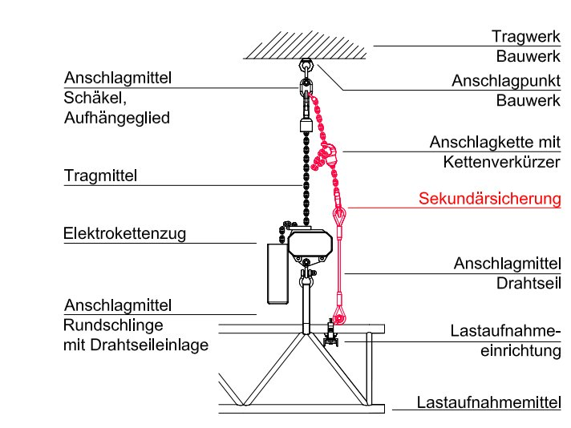

Anhang 3
Begriffe
Zur Erläuterung der Begriffe sind in der nachfolgenden Abbildung
die Arbeitsmittel im Kraftfluss dargestellt:

Abb. 46
- Ablegereife
Ablegereif bedeutet, dass Anschlagmittel so stark beschädigt
sind, dass sie nicht weiterverwendet werden dürfen.
- Anschlagmittel
Einrichtung, die eine Verbindung zwischen Tragwerk und Tragmittel,
Tragmittel und Last oder Tragmittel und Lastaufnahmemittel
herstellt
- Arbeitsmittel
Arbeitsmittel im Sinne dieser DGUV Information sind Gerätschaften,
die als tragende Elemente Lasten über Personen
halten.
- Betriebskoeffizient
Der Begriff Betriebskoeffizient ersetzt die alten Begriffe Sicherheitsbeiwert
und Sicherheitsfaktor.
Vereinfacht dargestellt ist der Betriebskoeffizient das Verhältnis
der Größe einer Last, die eine Maschine oder ein Element
gerade nicht mehr halten kann (Bruchkraft) und der Nennlast
dieser Einrichtungen. Für technische Produkte (z. B. Drahtseile,
Ketten, Traversen, Schellen) werden Betriebskoeffizienten
für den sicheren Hebezeug- und Kranbetrieb in Anhang 1 der
Maschinenrichtlinie und in Normen festgelegt, vgl. Richtlinie
2006/42/EG (Maschinenrichtlinie) Anhang 1, Punkt 4.1.1.
- Bridle
mehrsträngige Anschlagvariante mit flexiblen Anschlagmitteln
zur Schaffung von Anschlagpunkten an Gebäudetragwerken
oder zur Lastverteilung an Lastaufnahmemitteln (Traversen)
- Eigensichere Konstruktion
Als eine eigensichere ("inhärent sichere") Konstruktion gilt ein
Arbeitsmittel, das durch gezielte Auswahl von Konstruktionsmerkmalen
Gefährdungen vermeidet oder Risiken vermindert
(vgl. DIN EN ISO 12100: 2011-03).
- Eurocode
Europäische Normreihe des Bauwesens zur Bemessung von
Tragwerken.
- Formschlüssige Verbindungen
Formschlüssige Verbindungen entstehen durch das Ineinandergreifen
von mindestens zwei Elementen. Die Haltekraft
oder Tragfähigkeit wird ausschließlich durch die Gestaltung
und Dimensionierung der Elemente bestimmt; typisches Beispiel
sind Bolzen- und Schraubverbindungen.
- Hinreichende Risikominderung
Risikominderung, die unter Berücksichtigung des Standes der
Technik zumindest den gesetzlichen Anforderungen entspricht
(vgl. DIN EN ISO 12100: 2011-03)
- Kraftschlüssige Verbindungen
Kraftschlüssige Verbindungen entstehen durch die Wirkung
von Druck- und Reibekräften innerhalb des Verbindungssystems.
Die Haltekraft oder Tragfähigkeit ist abhängig von der
möglichen Vorspannung, der Form und den Materialeigenschaften
der Verbindungselemente; typisches Beispiel sind
Klemmverbindungen.
- Lastaufnahmeeinrichtung
besteht aus Hebezeug, Lastaufnahmemittel und/oder
Anschlagmittel
- Lastaufnahmemittel
Einrichtung, die zur Aufnahme von Lasten dient;
"Lastaufnahmemittel" beschreibt ein nicht zum Hebezeug
gehörendes Bau- oder Ausrüstungsteil, welches das Ergreifen
der Last ermöglicht und zwischen Maschine und Last oder an
der Last selbst angebracht wird, oder das dazu bestimmt ist,
integraler Bestandteil der Last zu werden, und gesondert in
Verkehr gebracht wird.
- Lasten über Personen
Die Bezeichnung "Lasten über Personen" als Oberbegriff beinhaltet
das Hängen von Lasten sowie alle anderen Vorgänge,
für die auch Begriffe wie Anschlagen, Heben oder Tragen von
Lasten verwendet werden.
Das sichere Halten von Lasten soll ein Herabfallen sowohl der
Lastaufnahmemittel als auch der Last selbst verhindern.
- Tragfähigkeit
Last, die von einem Arbeitsmittel bestimmungsgemäß höchstens
aufgenommen werden kann, ohne Berücksichtigung
dynamischer Kräfte (vgl. DIN 56950-1: 2012-05).
- Tragmittel
mit einem Hebezeug dauernd verbundene Einrichtung zum
Aufnehmen von Lastaufnahmemitteln, Anschlagmitteln oder
Lasten (z. B.: Kette, Drahtseil, Stahlband)
- Working Load Limit (WLL)
Working Load Limit (WLL) ist die internationale Bezeichnung
der Tragfähigkeit eines Anschlagmittels für den industriellen
Hebezeugbetrieb. Die Tragfähigkeit WLL wird in Kilogramm
(kg) oder Tonnen (t) angegeben.
Die WLL ergibt sich aus der Mindestbruchkraft des Anschlagmittels,
die durch den Betriebskoeffizienten dividiert wird.
Gegebenenfalls werden Abminderungsfaktoren (z. B. für die
Seilendverbindungen) berücksichtigt.
Für das Halten von Lasten über Personen darf das Anschlagmittel
maximal mit der Hälfte der Tragfähigkeit WLL belastet
werden.